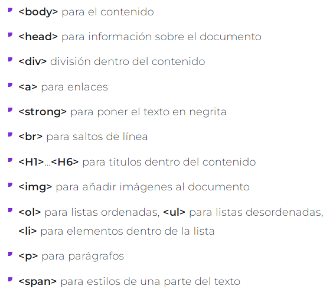

ETIQUETAS BASICAS DE HTML
Las etiquedas mas basicas de HTML son las mas usadas para crear documentos HTML
que son:

Fuente:
Celaya Luna, A. (2014). Creación de páginas web:
HTML5. p. 1 - 60. https://elibro-net.bibliotecavirtual.unad.edu.co/es/ereader/unad/56045
ATRIBUTOS Y VALORES
Entre los atributos y valores podemos decir que las etiquetas HTML definen sus propios atributos
estos se dividen en cuatro grupos que son: Atributos Basicos, Atributos de Internacionalizacion
Atributos de eventos y atributos de foco.
Los valores encontramos que se encuentran los en linea y los en bloque, los primeros solo ocupan el
espacio necesario para mostrar sus contenidos, los segundos siempre empiezan en una nueva linea y ocupan
todo el espacio disponible hasta el final de la linea.

Fuente:
Celaya Luna, A. (2014). Creación de páginas web:
HTML5. p. 1 - 60. https://elibro-net.bibliotecavirtual.unad.edu.co/es/ereader/unad/56045